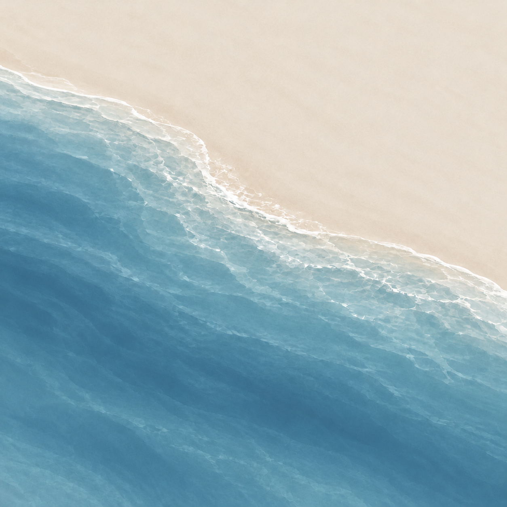

浪沫推送
A · 字随浪走
每个字略有转向、位置错开，底部沾着湿沙和断续泡沫，像刚被浪推到潮线上。
56 px
UNFINISHED · ICON STUDY 01
不再把「未完成」规整地横排在海岸线上。三个字各自成为被浪推送的对象，沿着水沙交界处错落停下；下方小图按 56 px 桌面图标尺寸预览。

每个字略有转向、位置错开，底部沾着湿沙和断续泡沫，像刚被浪推到潮线上。
泡沫把三个字分段带到岸边，浪退后仍留下湿润的字形；动势更明显，但质感更梦幻。